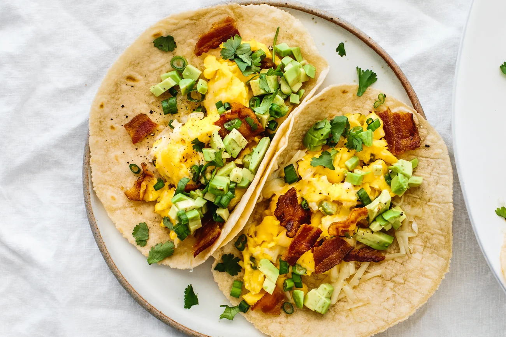

This Lone Star culinary treasure is quite simple – a tortilla stuffed with traditional breakfast ingredients, depending on personal preferences: processed yellow cheese, pork, and eggs are just some of the most common ingredients used in the preparation of breakfast tacos.
Meal prep time : 30 minutes
Servings : 2